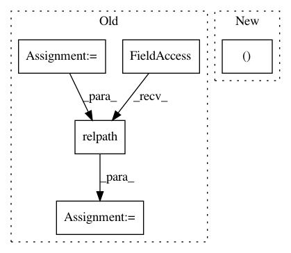

a6e07cefbde47684bcc540c9f187d3c88311921b,src/python/pants/backend/python/goals/run_pex_binary.py,,create_pex_binary_run_request,#Any#Any#Any#,26
Before Change
f"{repr(field_set.address)}, so it must have exactly one source, but it has "
f"{len(binary_source_paths.files)}"
)
entry_point_path = binary_source_paths.files[0]
source_root = await Get(
SourceRoot,
SourceRootRequest,
SourceRootRequest.for_file(entry_point_path),
)
entry_point = PexBinarySources.translate_source_file_to_entry_point(
os.path.relpath(entry_point_path, source_root.path)
)
transitive_targets = await Get(TransitiveTargets, TransitiveTargetsRequest([field_set.address]))
// Note that we get an intermediate PexRequest here (instead of going straight to a Pex)
// so that we can get the interpreter constraints for use in runner_pex_request.
After Change
pex_binary_defaults: PexBinaryDefaults,
pex_env: PexEnvironment,
) -> RunRequest:
entry_point, transitive_targets = await MultiGet(
Get(
ResolvedPexEntryPoint,
ResolvePexEntryPointRequest(field_set.entry_point, field_set.sources),
In pattern: SUPERPATTERN
Frequency: 3
Non-data size: 5
Instances
Project Name: pantsbuild/pants
Commit Name: a6e07cefbde47684bcc540c9f187d3c88311921b
Time: 2020-10-22
Author: 14852634+Eric-Arellano@users.noreply.github.com
File Name: src/python/pants/backend/python/goals/run_pex_binary.py
Class Name:
Method Name: create_pex_binary_run_request
Project Name: ilastik/ilastik
Commit Name: 99ab5a7c65dafab05f2e6c12034420ec6430624a
Time: 2012-05-08
Author: bergs@janelia.hhmi.org
File Name: ilastik-shell/applets/dataSelection/dataSelectionGui.py
Class Name: DataSelectionGui
Method Name: updateFilePath
Project Name: pantsbuild/pants
Commit Name: fedc91cb2e1455b7a8dca9c843bbd8b553a04241
Time: 2019-02-15
Author: stuhood@twitter.com
File Name: src/python/pants/backend/codegen/wire/java/wire_gen.py
Class Name: WireGen
Method Name: format_args_for_target